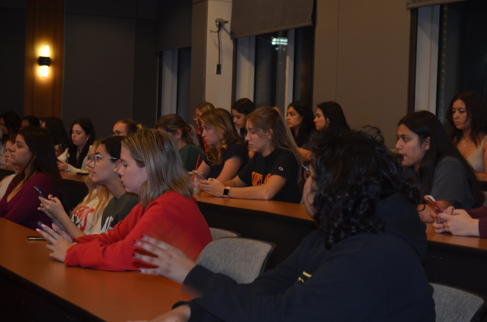

Here are some of my favortie photos
taken for my photojournalism class:
University of Maryland
Farmer's Market located outside of Tawes Hall. Long-line of individuals
wait for RavenHook Bakehouse's food. Owner of RavenHook
Bakehouse selling his baked goods. Students gather near
RavenHook Bakehouse to get a pastry. Qualia Coffee vendor
makes University of Maryland student a coffee. A girl holding coffee
with sugar trickling down her hand. Owner of Mel's Munchies
smiles at the camera while holding a container of her pastries. Bottles of wine displayed
at the Farmer's Market. One crate of green grapes
among several purple grapes at the Farmer's Market. University of Maryland
students eating produce bought from the Farmer's Market. Owner of PoshMallow gives
marshmallow samples to customers.
Vegetables from McCleaf's
Orchard at the Farmer's Market.
McCleaf's Orchard apples
being sold at the Farmer's Market.
University of Maryland
student styling her hair before bed.
Aaryanna Hossain, 8,
playing Roblox on her iPad. Aniere Hossain, 6,
giggling with her sisters. University of Maryland
junior Marissa Yancone listening to an audio message from her friend.Yancone smiling as she
looks at her computer. Sahana Bharadwaj, junior
at University of Maryland, spots the camera as she grabs her blanket to cover her face. Bharadwaj reacts to the
football game she's watching.

Empowering Women in Law
members completing a fundraiser form for the Sentencing Project during the meeting. EWIL member smiling while
talking to another member.
EWIL members filling out
the scavenger hunt worksheet.
EWIL members
networkingwith each other. EWIL member laughing
while talking to another member.
An EWIL member making
last minute changes to her worksheet.
The immediate entrance of
the Calvert County fair on Sept. 28, 2024. Aniere Hossain staring
out into the abyss after getting her face painted. Aaryanna Hossain getting
a butterfly painted onto her face. Aniere Hossain lounging
right after she got her face painted. Calvert County girls dig
into the fair's french fries. Luminous rocket ride at
the Calvert County fair. A multi-colored goat at
the Calvert County fair. Cows exhibited at the
Calvert County fair. A white goat at the fair
looking straight at the camera. Several caramel-colored
goats being silly at the Calvert County fair. A bright swing ride at
the Calvert County fair. Indiana University of
Pennsylvania junior Marco Dorsett eating cotton candy at the Calvert County fair. Aniere and Aaryanna
Hossain eating a handful of cotton candy. University of Maryland
senior Aaransa Hossain standing in front of the ferris wheel at the Calvert County fair.